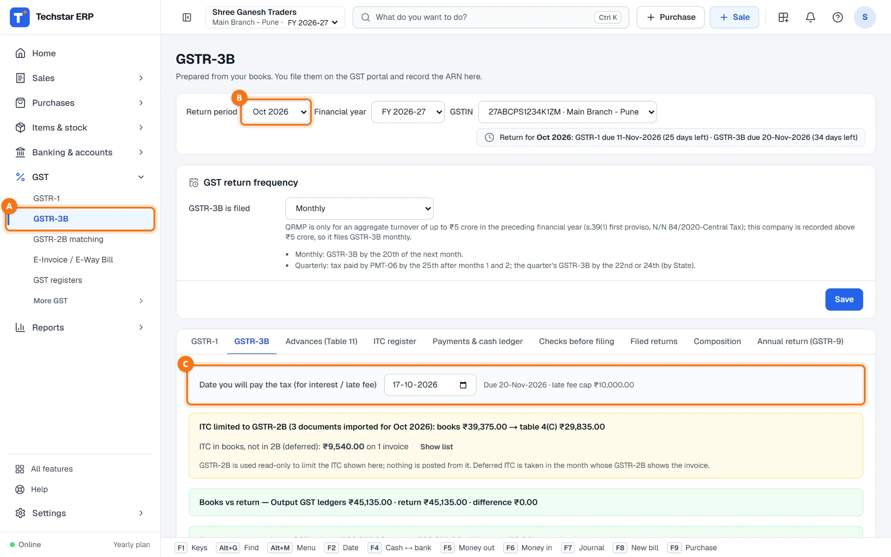
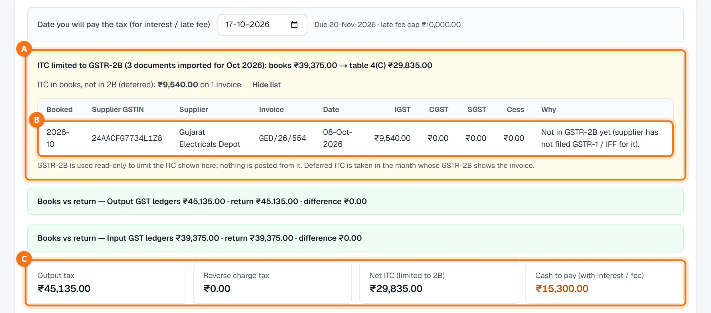
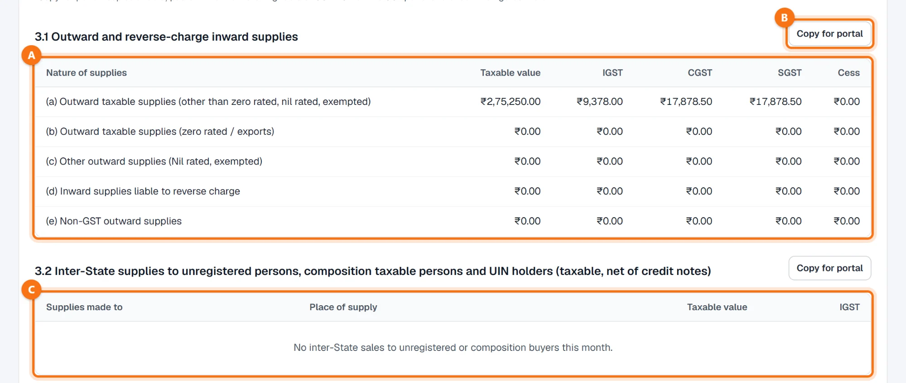
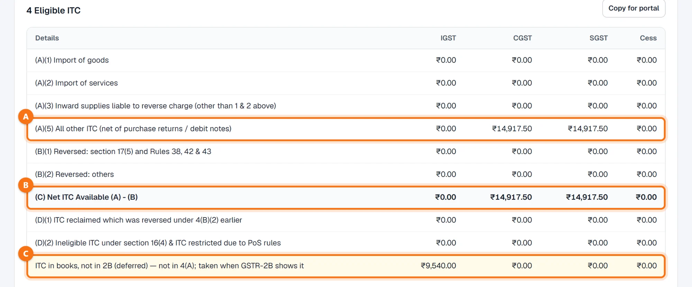
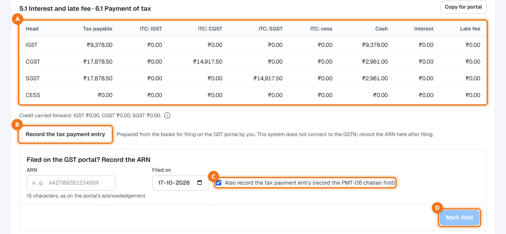

Techstar ERP हिंदी और मराठी में भी इस्तेमाल कर सकते हैं। ऊपर दाईं ओर अपने नाम के पहले अक्षर वाले गोल बटन पर click करें → Language (भाषा) → हिन्दी। ERP का menu हिंदी में दिखेगा (जैसे Sales = बिक्री)। बिल और दूसरे कानूनी दस्तावेज़ हमेशा की तरह छपते हैं। इस guide के screenshots English menu के हैं।
शुरू करने से पहले
ERP तैयार करता है, आप भरते हैं। GSTR-3B आपके हिसाब से निकाला जाता है। यह software GSTN से नहीं जुड़ता और रिटर्न नहीं भरता: GSTR-3B आप GST पोर्टल पर भरते हैं और उसका ARN यहाँ दर्ज करते हैं।
पहले महीने का GSTR-2B import करें — GST → GSTR-2B matching में (देखें खरीद का GSTR-2B से मिलान)। Table 4 का ITC उसमें दिखने वाले बिलों तक ही सीमित रहता है। GSTR-2B सिर्फ़ देखने के लिए इस्तेमाल होता है: उससे खरीद, जर्नल या लेजर कभी नहीं बनते या बदलते।
महीने के सारे बिक्री और खरीद बिल डाले हुए हों — देखें सेल्स इनवॉइस और खरीद बिल।
GSTR-3B खोलें
बाईं ओर के menu में GST → GSTR-3B A पर click करें (हिंदी menu में: GST → GSTR-3B (महीने का टैक्स))। Return period B (उदाहरण में अक्टूबर 2026), Financial year और GSTIN चुनें।
धूसर पट्टी C में Date you will pay the tax (for interest / late fee) अपने आप आज की तारीख होती है। बगल में ड्यू डेट और देर होने पर कितने दिन देर, दिखता है; table 5.1 का ब्याज और लेट फ़ीस इसी तारीख से गिने जाते हैं।

GSTR-2B से ITC जाँचें
बॉक्स A में महीने के लिए कितने GSTR-2B दस्तावेज़ import हुए, और हिसाब के ITC के सामने table 4(C) में जाने वाला ITC दिखता है। उदाहरण में: हिसाब का ITC ₹39,375.00, table 4(C) ₹29,835.00।
ITC in books, not in 2B (deferred) उन बिलों का क्रेडिट है जिन्हें सप्लायर ने अभी तक रिपोर्ट नहीं किया। उन बिलों को कारण के साथ देखने के लिए Show list पर click करें B। आगे खिसकाया गया ITC उस महीने लिया जाता है जिसके GSTR-2B में वह बिल दिखे — तब ERP उसे अपने आप आगे लाता है।

टाइल्स C रिटर्न का सार देती हैं: Output tax, Reverse charge tax, Net ITC (limited to 2B) और Cash to pay (with interest / fee)। दोनों Books vs return बॉक्स महीने के Output और Input GST ledgers की रिटर्न से तुलना करते हैं।
महीने का GSTR-2B import नहीं किया? बॉक्स लाल हो जाता है और दिखने वाला ITC हिसाब का आँकड़ा होता है। तब Copy for portal और tax payment entry के लिए कारण (कम से कम 10 अक्षर) पूछा जाता है, जो audit log में रहता है। GSTR-2B के बिना आगे बढ़ने की अनुमति सिर्फ़ मालिक, admin या accountant को है।
Table 3.1 और 3.2
3.1 Outward and reverse-charge inward supplies A में आपकी बिक्री का taxable value और IGST / CGST / SGST / cess, zero-rated और exempt सप्लाई और reverse charge वाली आवक दिखती है। 3.2 C में बिना रजिस्ट्रेशन वाले, composition dealer और UIN धारकों को दूसरे राज्य में की गई बिक्री place of supply के हिसाब से दिखती है।
टेबल के बगल में Copy for portal B पर click करें, फिर GST पोर्टल पर GSTR-3B की उसी टेबल में paste करें और वहाँ आँकड़े जाँचें।

Table 4 — मिलने वाला ITC
Table 4 में ITC प्रकार के हिसाब से दिखता है: import, reverse charge और (A)(5) All other ITC A, उसमें से 4(B) के reversal घटाकर (C) Net ITC Available B। पीली लाइन C इस महीने 4(A) में न लिया गया, आगे खिसकाया ITC दिखाती है।
उसके नीचे table 5 में exempt, nil-rated और non-GST आवक दिखती है।

ITC reversal (जैसे 180 दिन में भुगतान न किया सप्लायर) इसी स्क्रीन के ITC register टैब से दर्ज होता है और table 4(B) में दिखता है।
Set-off और नकद भुगतान
5.1 Interest and late fee · 6.1 Payment of tax A में हर head का देय टैक्स, उसमें से कितना ITC से (IGST, CGST, SGST, cess क्रेडिट) भरा जाता है और कितना नकद भरना बाकी है, ब्याज और लेट फ़ीस के साथ दिखता है। आगे जाने वाला क्रेडिट टेबल के नीचे दिखता है।
Set-off सबसे कम नकद लगे, इस तरह किया जाता है: पहले IGST क्रेडिट IGST पर, फिर CGST / SGST पर; CGST क्रेडिट CGST पर, फिर IGST पर; SGST क्रेडिट SGST पर, फिर IGST पर — CGST क्रेडिट SGST पर कभी नहीं; reverse charge का टैक्स नकद में ही।

नकद रकम GST पोर्टल पर PMT-06 चालान से भरें और ERP में दर्ज करें — देखें GST पेमेंट और कैश लेजर। फिर Record the tax payment entry B आपके हिसाब में set-off की एंट्री करता है: Output GST ledgers, Input GST और electronic cash ledger से मिलाए जाते हैं। Cash ledger में काफ़ी रकम न हो तो ERP यह एंट्री नहीं करने देता।
पोर्टल पर भरें और ARN दर्ज करें
GSTR-3B अपने लॉगिन से GST पोर्टल पर भरें। फिर Filed on the GST portal? Record the ARN के नीचे 15 अक्षरों का ARN और भरने की तारीख डालकर Mark filed D पर click करें।
उसी समय set-off दर्ज करना हो तो Also record the tax payment entry (record the PMT-06 challan first) C पर टिक रखें (पहले ही Record the tax payment entry इस्तेमाल किया हो तो टिक हटा दें)। Filed करने पर रिटर्न ARN के साथ सँभाला जाता है और वह महीना सेल्स दस्तावेज़ों के लिए लॉक हो जाता है।
आम सवाल
Table 4 का ITC मेरे खरीद बिलों के GST से कम क्यों है?
क्या Techstar ERP GSTR-3B भरता है या टैक्स भरता है?
ब्याज और लेट फ़ीस कैसे गिने जाते हैं?
मैं तिमाही (QRMP) भरता हूँ। क्या ERP को यह पता है?
क्या GSTR-2B import करने से मेरा हिसाब बदलता है?
और guides
Screenshots Techstar ERP की demo कंपनी के हैं (Shree Ganesh Traders, Pune)। सभी नाम, GSTIN, रकम और दस्तावेज़ों के नंबर नमूना जानकारी हैं।